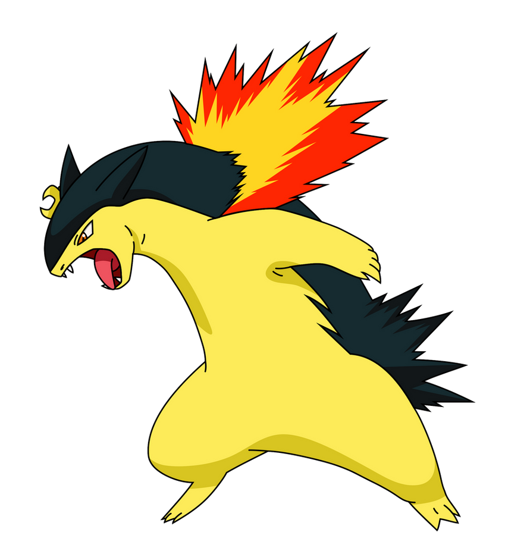

Typhlosion is my favorite Pokemon, so it makes sense that it would be here. It starts as Cyndanquil, which evolves into Quilava at Level 14, and then into Typhlosion at Level 36. One of the things I like about Typhlosion is that it has a lot of variety in terms of the moves it can learn. Typhlosion can learn moves that can help it cover its three weaknesses, Ground, Rock, and Water. The reason for the nickname 'Vulcan' is that, as a kid, I thought that the fire coming out of Cyndanquil's back looked like an erupting volcano.
© 2021 Midterm Project: My Ideal Pokemon Team